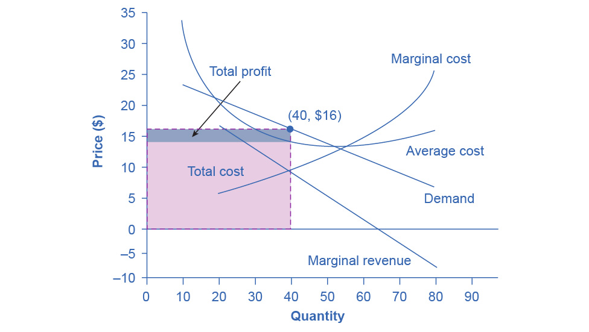

10.1 Monopolistic Competition
Learning Objectives
By the end of this section, you will be able to:
- Explain the significance of differentiated products
- Describe how a monopolistic competitor chooses price and quantity
- Discuss entry, exit, and efficiency as they pertain to monopolistic competition
- Analyze how advertising can impact monopolistic competition
Monopolistic competition involves many firms competing against each other, but selling products that are distinctive in some way. Examples include stores that sell different styles of clothing; restaurants or grocery stores that sell a variety of food; and even products like golf balls or beer that may be at least somewhat similar but differ in public perception because of advertising and brand names. There are over 600,000 restaurants in the United States. When products are distinctive, each firm has a mini-monopoly on its particular style or flavor or brand name. However, firms producing such products must also compete with other styles and flavors and brand names. The term “monopolistic competition” captures this mixture of mini-monopoly and tough competition, and the following Clear It Up feature introduces its derivation.
Clear It Up
Who invented the theory of imperfect competition?
Two economists independently but simultaneously developed the theory of imperfect competition in 1933. The first was Edward Chamberlin of Harvard University who published The Economics of Monopolistic Competition. The second was Joan Robinson of Cambridge University who published The Economics of Imperfect Competition. Robinson subsequently became interested in macroeconomics and she became a prominent Keynesian, and later a post-Keynesian economist. (See the Welcome to Economics! and The Keynesian Perspective chapters for more on Keynes.)
Differentiated Products
A firm can try to make its products different from those of its competitors in several ways: physical aspects of the product, location from which it sells the product, intangible aspects of the product, and perceptions of the product. We call products that are distinctive in one of these ways differentiated products.
Physical aspects of a product include all the phrases you hear in advertisements: unbreakable bottle, nonstick surface, freezer-to-microwave, non-shrink, extra spicy, newly redesigned for your comfort. A firm's location can also create a difference between producers. For example, a gas station located at a heavily traveled intersection can probably sell more gas, because more cars drive by that corner. A supplier to an automobile manufacturer may find that it is an advantage to locate close to the car factory.
Intangible aspects can differentiate a product, too. Some intangible aspects may be promises like a guarantee of satisfaction or money back, a reputation for high quality, services like free delivery, or offering a loan to purchase the product. Finally, product differentiation may occur in the minds of buyers. For example, many people could not tell the difference in taste between common varieties of ketchup or mayonnaise if they were blindfolded but, because of past habits and advertising, they have strong preferences for certain brands. Advertising can play a role in shaping these intangible preferences.
The concept of differentiated products is closely related to the degree of variety that is available. If everyone in the economy wore only blue jeans, ate only white bread, and drank only tap water, then the markets for clothing, food, and drink would be much closer to perfectly competitive. The variety of styles, flavors, locations, and characteristics creates product differentiation and monopolistic competition.
Perceived Demand for a Monopolistic Competitor
A monopolistically competitive firm perceives a demand for its goods that is an intermediate case between monopoly and competition. Figure 10.2 offers a reminder that the demand curve that a perfectly competitive firm faces is perfectly elastic or flat, because the perfectly competitive firm can sell any quantity it wishes at the prevailing market price. In contrast, the demand curve, as faced by a monopolist, is the market demand curve, since a monopolist is the only firm in the market, and hence is downward sloping.

Figure 10.2 Perceived Demand for Firms in Different Competitive Settings The demand curve that a perfectly competitive firm faces is perfectly elastic, meaning it can sell all the output it wishes at the prevailing market price. The demand curve that a monopoly faces is the market demand. It can sell more output only by decreasing the price it charges. The demand curve that a monopolistically competitive firm faces falls in between.
The demand curve as a monopolistic competitor faces is not flat, but rather downward-sloping, which means that the monopolistic competitor can raise its price without losing all of its customers or lower the price and gain more customers. Since there are substitutes, the demand curve facing a monopolistically competitive firm is more elastic than that of a monopoly where there are no close substitutes. If a monopolist raises its price, some consumers will choose not to purchase its product—but they will then need to buy a completely different product. However, when a monopolistic competitor raises its price, some consumers will choose not to purchase the product at all, but others will choose to buy a similar product from another firm. If a monopolistic competitor raises its price, it will not lose as many customers as would a perfectly competitive firm, but it will lose more customers than would a monopoly that raised its prices.
At a glance, the demand curves that a monopoly and a monopolistic competitor face look similar—that is, they both slope down. However, the underlying economic meaning of these perceived demand curves is different, because a monopolist faces the market demand curve and a monopolistic competitor does not. Rather, a monopolistically competitive firm’s demand curve is but one of many firms that make up the “before” market demand curve. Are you following? If so, how would you categorize the market for golf balls? Take a swing, then see the following Clear It Up feature.
Clear It Up
Are golf balls really differentiated products?
Monopolistic competition refers to an industry that has more than a few firms, each offering a product which, from the consumer’s perspective, is different from its competitors. The U.S. Golf Association runs a laboratory that tests 20,000 golf balls a year. There are strict rules for what makes a golf ball legal. A ball's weight cannot exceed 1.620 ounces and its diameter cannot be less than 1.680 inches (which is a weight of 45.93 grams and a diameter of 42.67 millimeters, in case you were wondering). The Association also tests the balls by hitting them at different speeds. For example, the distance test involves having a mechanical golfer hit the ball with a titanium driver and a swing speed of 120 miles per hour. As the testing center explains: “The USGA system then uses an array of sensors that accurately measure the flight of a golf ball during a short, indoor trajectory from a ball launcher. From this flight data, a computer calculates the lift and drag forces that are generated by the speed, spin, and dimple pattern of the ball. ... The distance limit is 317 yards.”
Over 1800 golf balls made by more than 100 companies meet the USGA standards. The balls do differ in various ways, such as the pattern of dimples on the ball, the types of plastic on the cover and in the cores, and other factors. Since all balls need to conform to the USGA tests, they are much more alike than different. In other words, golf ball manufacturers are monopolistically competitive.
However, retail sales of golf balls are about $500 million per year, which means that many large companies have a powerful incentive to persuade players that golf balls are highly differentiated and that it makes a huge difference which one you choose. Sure, Tiger Woods can tell the difference. For the average amateur golfer who plays a few times a summer—and who loses many golf balls to the woods and lake and needs to buy new ones—most golf balls are pretty much indistinguishable.
How a Monopolistic Competitor Chooses Price and Quantity
The monopolistically competitive firm decides on its profit-maximizing quantity and price in much the same way as a monopolist. A monopolistic competitor, like a monopolist, faces a downward-sloping demand curve, and so it will choose some combination of price and quantity along its perceived demand curve.
As an example of a profit-maximizing monopolistic competitor, consider the Authentic Chinese Pizza store, which serves pizza with cheese, sweet and sour sauce, and your choice of vegetables and meats. Although Authentic Chinese Pizza must compete against other pizza businesses and restaurants, it has a differentiated product. The firm’s perceived demand curve is downward sloping, as Figure 10.3 shows and the first two columns of Table 10.1.

Figure 10.3 How a Monopolistic Competitor Chooses its Profit Maximizing Output and Price To maximize profits, the Authentic Chinese Pizza shop would choose a quantity where marginal revenue equals marginal cost, or Q where MR = MC. Here it would choose a quantity of 40 and a price of $16.
Table 10.1 Revenue and Cost Schedule
We can multiply the combinations of price and quantity at each point on the demand curve to calculate the total revenue that the firm would receive, which is in the third column of Table 10.1. We calculate marginal revenue, in the fourth column, as the change in total revenue divided by the change in quantity. The final columns of Table 10.1 show total cost, marginal cost, and average cost. As always, we calculate marginal cost by dividing the change in total cost by the change in quantity, while we calculate average cost by dividing total cost by quantity. The following Work It Out feature shows how these firms calculate how much of their products to supply at what price.
Work It Out
How a Monopolistic Competitor Determines How Much to Produce and at What Price
The process by which a monopolistic competitor chooses its profit-maximizing quantity and price resembles closely how a monopoly makes these decisions process. First, the firm selects the profit-maximizing quantity to produce. Then the firm decides what price to charge for that quantity.
Step 1. The monopolistic competitor determines its profit-maximizing level of output. In this case, the Authentic Chinese Pizza company will determine the profit-maximizing quantity to produce by considering its marginal revenues and marginal costs. Two scenarios are possible:
- If the firm is producing at a quantity of output where marginal revenue exceeds marginal cost, then the firm should keep expanding production, because each marginal unit is adding to profit by bringing in more revenue than its cost. In this way, the firm will produce up to the quantity where MR = MC.
- If the firm is producing at a quantity where marginal costs exceed marginal revenue, then each marginal unit is costing more than the revenue it brings in, and the firm will increase its profits by reducing the quantity of output until MR = MC.
In this example, MR and MC intersect at a quantity of 40, which is the profit-maximizing level of output for the firm.
Step 2. The monopolistic competitor decides what price to charge. When the firm has determined its profit-maximizing quantity of output, it can then look to its perceived demand curve to find out what it can charge for that quantity of output. On the graph, we show this process as a vertical line reaching up through the profit-maximizing quantity until it hits the firm’s perceived demand curve. For Authentic Chinese Pizza, it should charge a price of $16 per pizza for a quantity of 40.
Once the firm has chosen price and quantity, it’s in a position to calculate total revenue, total cost, and profit. At a quantity of 40, the price of $16 lies above the average cost curve, so the firm is making economic profits. From Table 10.1 we can see that, at an output of 40, the firm’s total revenue is $640 and its total cost is $580, so profits are $60. In Figure 10.3, the firm’s total revenues are the rectangle with the quantity of 40 on the horizontal axis and the price of $16 on the vertical axis. The firm’s total costs are the light shaded rectangle with the same quantity of 40 on the horizontal axis but the average cost of $14.50 on the vertical axis. Profits are total revenues minus total costs, which is the shaded area above the average cost curve.
Although the process by which a monopolistic competitor makes decisions about quantity and price is similar to the way in which a monopolist makes such decisions, two differences are worth remembering. First, although both a monopolist and a monopolistic competitor face downward-sloping demand curves, the monopolist’s perceived demand curve is the market demand curve, while the perceived demand curve for a monopolistic competitor is based on the extent of its product differentiation and how many competitors it faces. Second, a monopolist is surrounded by barriers to entry and need not fear entry, but a monopolistic competitor who earns profits must expect the entry of firms with similar, but differentiated, products.
Monopolistic Competitors and Entry
If one monopolistic competitor earns positive economic profits, other firms will be tempted to enter the market. A gas station with a great location must worry that other gas stations might open across the street or down the road—and perhaps the new gas stations will sell coffee or have a carwash or some other attraction to lure customers. A successful restaurant with a unique barbecue sauce must be concerned that other restaurants will try to copy the sauce or offer their own unique recipes. A laundry detergent with a great reputation for quality must take note that other competitors may seek to build their own reputations.
The entry of other firms into the same general market (like gas, restaurants, or detergent) shifts the demand curve that a monopolistically competitive firm faces. As more firms enter the market, the quantity demanded at a given price for any particular firm will decline, and the firm’s perceived demand curve will shift to the left. As a firm’s perceived demand curve shifts to the left, its marginal revenue curve will shift to the left, too. The shift in marginal revenue will change the profit-maximizing quantity that the firm chooses to produce, since marginal revenue will then equal marginal cost at a lower quantity.
Figure 10.4 (a) shows a situation in which a monopolistic competitor was earning a profit with its original perceived demand curve (D0). The intersection of the marginal revenue curve (MR0) and marginal cost curve (MC) occurs at point S, corresponding to quantity Q0, which is associated on the demand curve at point T with price P0. The combination of price P0 and quantity Q0 lies above the average cost curve, which shows that the firm is earning positive economic profits.

Figure 10.4 Monopolistic Competition, Entry, and Exit (a) At P0 and Q0, the monopolistically competitive firm in this figure is making a positive economic profit. This is clear because if you follow the dotted line above Q0, you can see that price is above average cost. Positive economic profits attract competing firms to the industry, driving the original firm’s demand down to D1. At the new equilibrium quantity (P1, Q1), the original firm is earning zero economic profits, and entry into the industry ceases. In (b) the opposite occurs. At P0 and Q0, the firm is losing money. If you follow the dotted line above Q0, you can see that average cost is above price. Losses induce firms to leave the industry. When they do, demand for the original firm rises to D1, where once again the firm is earning zero economic profit.
Unlike a monopoly, with its high barriers to entry, a monopolistically competitive firm with positive economic profits will attract competition. When another competitor enters the market, the original firm’s perceived demand curve shifts to the left, from D0 to D1, and the associated marginal revenue curve shifts from MR0 to MR1. The new profit-maximizing output is Q1, because the intersection of the MR1 and MC now occurs at point U. Moving vertically up from that quantity on the new demand curve, the optimal price is at P1.
As long as the firm is earning positive economic profits, new competitors will continue to enter the market, reducing the original firm’s demand and marginal revenue curves. The long-run equilibrium is in the figure at point Y, where the firm’s perceived demand curve touches the average cost curve. When price is equal to average cost, economic profits are zero. Thus, although a monopolistically competitive firm may earn positive economic profits in the short term, the process of new entry will drive down economic profits to zero in the long run. Remember that zero economic profit is not equivalent to zero accounting profit. A zero economic profit means the firm’s accounting profit is equal to what its resources could earn in their next best use. Figure 10.4 (b) shows the reverse situation, where a monopolistically competitive firm is originally losing money. The adjustment to long-run equilibrium is analogous to the previous example. The economic losses lead to firms exiting, which will result in increased demand for this particular firm, and consequently lower losses. Firms exit up to the point where there are no more losses in this market, for example when the demand curve touches the average cost curve, as in point Z.
Monopolistic competitors can make an economic profit or loss in the short run, but in the long run, entry and exit will drive these firms toward a zero economic profit outcome. However, the zero economic profit outcome in monopolistic competition looks different from the zero economic profit outcome in perfect competition in several ways relating both to efficiency and to variety in the market.
Monopolistic Competition and Efficiency
The long-term result of entry and exit in a perfectly competitive market is that all firms end up selling at the price level determined by the lowest point on the average cost curve. This outcome is why perfect competition displays productive efficiency: goods are produced at the lowest possible average cost. However, in monopolistic competition, the end result of entry and exit is that firms end up with a price that lies on the downward-sloping portion of the average cost curve, not at the very bottom of the AC curve. Thus, monopolistic competition will not be productively efficient.
In a perfectly competitive market, each firm produces at a quantity where price is set equal to marginal cost, both in the short and long run. This outcome is why perfect competition displays allocative efficiency: the social benefits of additional production, as measured by the marginal benefit, which is the same as the price, equal the marginal costs to society of that production. In a monopolistically competitive market, the rule for maximizing profit is to set MR = MC—and price is higher than marginal revenue, not equal to it because the demand curve is downward sloping. When P > MC, which is the outcome in a monopolistically competitive market, the benefits to society of providing additional quantity, as measured by the price that people are willing to pay, exceed the marginal costs to society of producing those units. A monopolistically competitive firm does not produce more, which means that society loses the net benefit of those extra units. This is the same argument we made about monopoly, but in this case the allocative inefficiency will be smaller. Thus, a monopolistically competitive industry will produce a lower quantity of a good and charge a higher price for it than would a perfectly competitive industry. See the following Clear It Up feature for more detail on the impact of demand shifts.
Clear It Up
Why does a shift in perceived demand cause a shift in marginal revenue?
We use the combinations of price and quantity at each point on a firm’s perceived demand curve to calculate total revenue for each combination of price and quantity. We then use this information on total revenue to calculate marginal revenue, which is the change in total revenue divided by the change in quantity. A change in perceived demand will change total revenue at every quantity of output and in turn, the change in total revenue will shift marginal revenue at each quantity of output. Thus, when entry occurs in a monopolistically competitive industry, the perceived demand curve for each firm will shift to the left, because a smaller quantity will be demanded at any given price. Another way of interpreting this shift in demand is to notice that, for each quantity sold, the firm will charge a lower price. Consequently, the marginal revenue will be lower for each quantity sold—and the marginal revenue curve will shift to the left as well. Conversely, exit causes the perceived demand curve for a monopolistically competitive firm to shift to the right and the corresponding marginal revenue curve to shift right, too.
A monopolistically competitive industry does not display productive or allocative efficiency in either the short run, when firms are making economic profits and losses, nor in the long run, when firms are earning zero profits.
The Benefits of Variety and Product Differentiation
Even though monopolistic competition does not provide productive efficiency or allocative efficiency, it does have benefits of its own. Product differentiation is based on variety and innovation. Most people would prefer to live in an economy with many kinds of clothes, foods, and car styles; not in a world of perfect competition where everyone will always wear blue jeans and white shirts, eat only spaghetti with plain red sauce, and drive an identical model of car. Most people would prefer to live in an economy where firms are struggling to figure out ways of attracting customers by methods like friendlier service, free delivery, guarantees of quality, variations on existing products, and a better shopping experience.
Economists have struggled, with only partial success, to address the question of whether a market-oriented economy produces the optimal amount of variety. Critics of market-oriented economies argue that society does not really need dozens of different athletic shoes or breakfast cereals or automobiles. They argue that much of the cost of creating such a high degree of product differentiation, and then of advertising and marketing this differentiation, is socially wasteful—that is, most people would be just as happy with a smaller range of differentiated products produced and sold at a lower price. Defenders of a market-oriented economy respond that if people do not want to buy differentiated products or highly advertised brand names, no one is forcing them to do so. Moreover, they argue that consumers benefit substantially when firms seek short-term profits by providing differentiated products. This controversy may never be fully resolved, in part because deciding on the optimal amount of variety is very difficult, and in part because the two sides often place different values on what variety means for consumers. Read the following Clear It Up feature for a discussion on the role that advertising plays in monopolistic competition.
Clear It Up
How does advertising impact monopolistic competition?
The U.S. economy spent about $180.12 billion on advertising in 2014, according to eMarketer.com. Roughly one third of this was television advertising, and another third was divided roughly equally between internet, newspapers, and radio. The remaining third was divided between direct mail, magazines, telephone directory yellow pages, and billboards. Mobile devices are increasing the opportunities for advertisers.
Advertising is all about explaining to people, or making people believe, that the products of one firm are differentiated from another firm's products. In the framework of monopolistic competition, there are two ways to conceive of how advertising works: either advertising causes a firm’s perceived demand curve to become more inelastic (that is, it causes the perceived demand curve to become steeper); or advertising causes demand for the firm’s product to increase (that is, it causes the firm’s perceived demand curve to shift to the right). In either case, a successful advertising campaign may allow a firm to sell either a greater quantity or to charge a higher price, or both, and thus increase its profits.
However, economists and business owners have also long suspected that much of the advertising may only offset other advertising. Economist A. C. Pigou wrote the following back in 1920 in his book, The Economics of Welfare:
It may happen that expenditures on advertisement made by competing monopolists [that is, what we now call monopolistic competitors] will simply neutralise one another, and leave the industrial position exactly as it would have been if neither had expended anything. For, clearly, if each of two rivals makes equal efforts to attract the favour of the public away from the other, the total result is the same as it would have been if neither had made any effort at all.